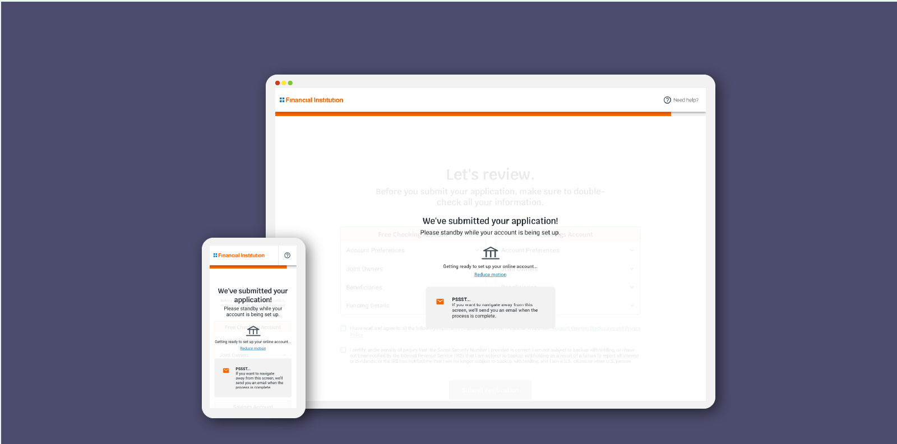

Our product had an interesting problem to solve: How do you let a user know that their application is loading, while also letting them know they can navigate away from the page? The main challenge for me with this bit of interaction design is that we had to meet accessibility criteria for users who might be sensitive to motion, while also letting an animation run indefinitely, since the backend process could take anywhere from 20 seconds to 8 minutes. It was really fun to work with the design and engineering team as the bridge between the two. The prototypes I created also helped us test out quick ideas without committing to a full integration in production code and gave us something to test with users.

Research
For the research portion of this design, I had to look at what other banking software systems were doing for loading animations, as well as general best practices for loading animations on web pages. What I found on a lot of banking websites was a generic circle loader that went on forever and didn’t give much indication to the user about what was happening or if they could leave.
The impact of animation on people with vestibular disorders can be quite severe. Triggered reactions include nausea, migraine headaches, and potentially needing bed rest to recover.
I also heavily researched the WCAG 2.0 guidelines surrounding moving objects on a screen and found that “For any moving, blinking or scrolling information that (1) starts automatically, (2) lasts more than five seconds, and (3) is presented in parallel with other content, there is a mechanism for the user to pause, stop, or hide it unless the movement, blinking, or scrolling is part of an activity where it is essential” (W3 Understanding Success Criterion 2.3.3: Animation from Interactions), so this design had to take into consideration a resume/stop animation button for users with sensitivity to motion, since this animation could run anywhere from 3 seconds to 3 minutes.
Presenting to the team
The need for an updated spinner that would also require a significant update to the code meant that I needed to present the use case for a more user-friendly spinner to my team. While the team was excited about the prospect of a new animated spinner, they were not so keen on taking the extra development effort to make it accessible. To persuade the team that it would be not only accessible, but a better user experience overall, I made a small user journey in Freehand by InVision to show our current experience versus what the experience could be. This, along with my research findings around accessibility, convinced the team to take an extra two weeks to work on the updated and accessible spinner design.

Wireframes
For the wireframing portion of this design, I wanted to get straight into an interactive prototype that we could use to test with users. The animation was also straightforward, so the time versus build aspect was relatively low.
I went ahead and created the animation in Adobe After Effects, then exported it through Lottie for faster implementation. Normally I would have created the animation from scratch with SVGs and CSS, but the animation was too complicated to do in the amount of time we had. After exporting it through Lottie, I was able to import it into Code Pen and iterate on the time, speed, and pacing of the animation
See the Pen Loading Screen Example Long 1 by cjohnson1341 (@cjohnson1341) on CodePen.
See the Pen Loading Screen Example Long 2 by cjohnson1341 (@cjohnson1341) on CodePen.
See the Pen Loading Screen Example Long 3 by cjohnson1341 (@cjohnson1341) on CodePen.
User Research
After creating three iterations of the animation and reviewing with our internal team, I went ahead and created three separate user tests that followed an A/B testing type scenario, where they were all asked the same questions, but shown different animations. This was a way to hopefully avoid “anchoring bias”, where a user latches onto the first design they see as their favorite, even if it was the subpar experience. After a few rounds of testing, as well as an additional test that had users seeing a fourth animation based on previous feedback, we ended up with our final pacing and design.
See the Pen Loading Screen Example Long Final by cjohnson1341 (@cjohnson1341) on CodePen.
UI High Fidelity
After doing many rounds of user testing, we now had to make sure the animation fit with our current design aesthetic. I created a static page of how the design needed to look overlaid with our current screens, as well as adding a stop/resume button for the animation that I would work on with the developers.